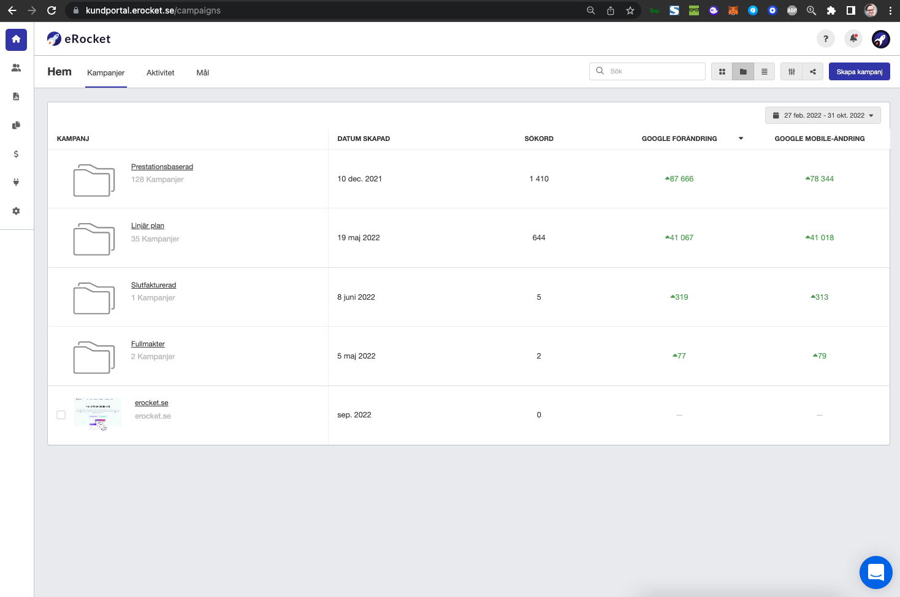

Kunden betalar för arbetet och bär resultatrisken
- Webbproduktion och SEO faktureras som arbete eller projekt.
- Leverantören får betalt även om önskad Google-placering uteblir.
- Kunden tar den ekonomiska risken för utfallet.
eRocket-modellen
Det här är den sakliga kärnan: eRocket var inte en lös idé. Det var en produkt, ett avtalat upplägg, en dashboard och en prestationsbaserad faktureringsmodell. Det är därför artikelseriens bild behöver jämföras med produkt- och avtalsunderlagen.
Riskfördelningen
Kunden betalade inte för ett löfte om framtida synlighet. Kunden betalade när avtalade sökfraser syntes på Google enligt modellen.
Oberoende- och intressekonfliktsspår
Gota Medias egen företagsmarknadssida och deras case-material visar att koncernen erbjuder digitala tjänster inom bland annat hemsidor, sökmedier, sökordsoptimering, sociala medier och Google. Det är i grunden den traditionella byrålogiken: kunden köper produktion, optimering och annonsering som tjänst.
eRocket vände på riskfördelningen genom att kunden enligt modellen betalade först vid uppmätt Google-synlighet. Det gör den redaktionella oberoendefrågan relevant: när en lokal mediekoncern som även säljer digital marknadsföring granskar en aktör som utmanar betalningsmodellen i samma bransch måste jäv, kommersiell överlapp och redaktionell kontroll kunna granskas öppet.
Detta bevisar inte i sig att publiceringen styrdes av kommersiella motiv. Det visar däremot varför BT:s personutpekande av William behövde föregås av extra noggrann källkritik, inte mindre.
Produktspåret
Den bevarade översikten visar bland annat 128 prestationsbaserade kampanjer, 1 410 sökord och stora registrerade positionsförändringar.

Försäljningskedjan
Det här är centralt för läsaren: de kundproblem som lyftes måste förstås i ljuset av att en extern aktör hade en dokumenterad roll i tidig försäljning och kundkontakt.